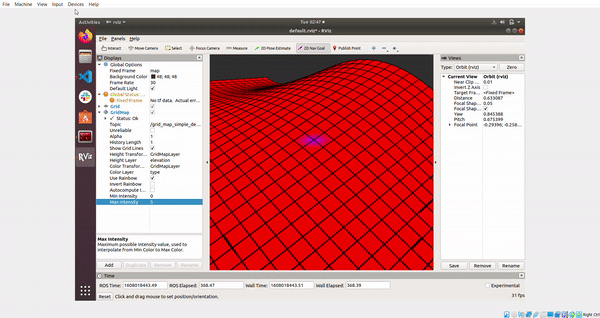

Legged Controls Group

During the fall of 2020 I joined the legged controls group to aid in the development of the planning and controls stack for the labs Spirit quadrupede platform. My primary research focus is the development of the local footstep planner subsystem. I am currently using ROS and Rviz to implement an online foothold optimization algorithm through a gridmap data structure in C++. This algorithm iterates through a submap around some nominal foothold, computes an objective value, and returns the cell with the smallest cost resulting in our new optimal foothold. I will be continuing my work on this specific subsystem during the Spring of 2021 where we will begin thinking more about our choice of objective functions.